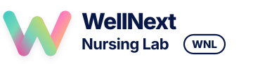
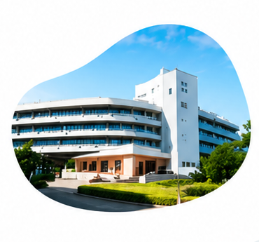
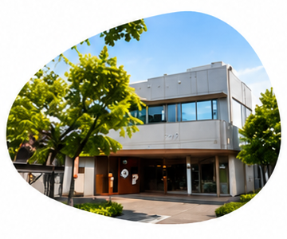

組織コーチング
ビジョン共有・対話を通して、
チームの一体感と成果を高めます。

未来をつくるのは、
「人」と「チーム」。
看護師一人ひとりが輝き、チームが変わる。
医療機関の成長を、私たちが伴走します。
SERVICE

離職率が 24% → 8% に改善
組織コーチング
新人看護師の定着率 65% → 92% に向上
リーダーシップ開発スタッフ満足度 85% → 95% に向上
個別コーチングSTRENGTHS
医療・看護の現場を深く理解したコーチが伴走します。
理論だけでなく、現場で使える具体策まで提案します。
多くの医療機関で成果を創出。継続率は90%以上。
初めての方でも安心して始められる丁寧なサポートを提供します。
PRICE
貴院の課題や規模に合わせて
最適なプランをご提案します。
FAQ
対話を通して課題を整理し、個人とチームの行動変容を促します。
病院、クリニック、訪問看護、介護施設など幅広く対応可能です。
可能です。対面・オンライン・ハイブリッドでご提案します。
課題によりますが、3ヶ月程度で変化を実感いただくケースが多いです。
可能です。まずは無料相談で現状や課題をお聞かせください。
Let’s create the next well.